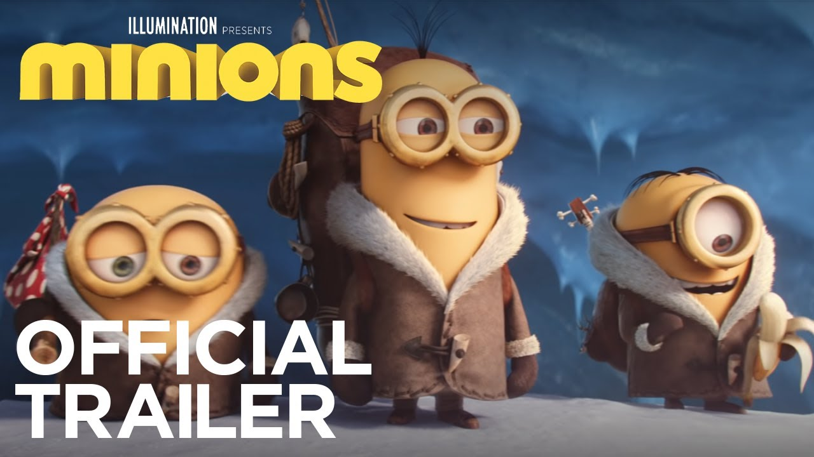
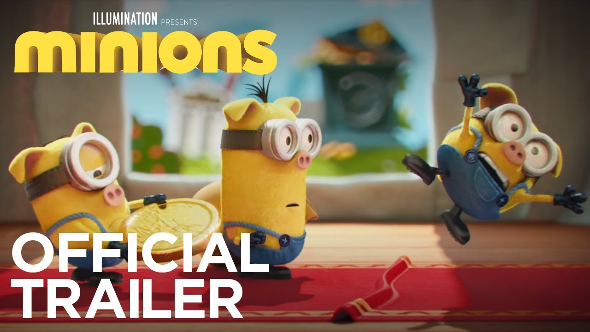

denumire
Illumination's Minions: The Rise of Gru Small Plush Stuart, by Just Play

Când toamna vine,copiii încep școală și se întâlnesc cu colegi trecuți. Toamna frunzele copacilor sunt mai închise la culoare și cad repede la adierea vântului . Unele animale încep hibernarea (ursul) si alte animale . Încep ploile si schimbările anotimpului toamna.Cad frunzele copacilor leganandu-se in aer ca niste fluturasi.Sunt zile in care ploua mult.Pe jos se formeaza un covor multicolor de frunze.Pasarelele isi iau zborul catre tarile soarelui.Fiecare anotimp semnifica ceva,de aceea eu le ador!
| water 1 | water 2 |
|---|---|
| water data 1 | water data 2 |
| Brand | Model | Culoare | An | Parcurs |
|---|---|---|---|---|
| Audi | Q5 | Alb | 2018 | 8310km |
| BMW | M4 Competition | Army Green | 2021 | 58km |
| Skoda | Octavia | Black | 2010 | 256701km |
The Minions are small, yellow, cylindrical creatures, who have one or two eyes. They are the signature characters of the Despicable Me series. They bring much of the comedy in the film, and they are known as the scene-stealer of the movie.
Frequently, they speak in an incomprehensible language, called Minionese, occasionally switching to English. They are much childish in some ways, yet they seem to be very intelligent in certain aspects. All the minions are supporting characters in Minions (with the exception of Kevin, Stuart, and Bob),
They are impulsive creatures with little self-control, but with a wide-eyed wonder and odd innocence that endears them to viewers and makes them relatable.
somewatertoafrica
somewatertoafricahere
somewatertoafrica
Thousands die every day due to the lack of access to clean sustainable water and a woefully poor healthcare system. The spread of COVID-19, across Africa is an unthinkable impending tragedy. Please share if you agree, as by sharing, you could help save someone's life sooo.... you shoud donate water to africa if you dont donate your life savings in water to africa u are a very very bad person so donate evrything you own to africa
Thousands die every day due to the lack of access to clean sustainable water and a woefully poor healthcare system. The spread of COVID-19, across Africa is an unthinkable impending tragedy. Please share if you agree, as by sharing, you could help save someone's life sooo.... you shoud donate water to africa if you dont donate your life savings in water to africa u are a very very bad person so donate evrything you own to africa
Thousands die every day due to the lack of access to clean sustainable water and a woefully poor healthcare system. The spread of COVID-19, across Africa is an unthinkable impending tragedy. Please share if you agree, as by sharing, you could help save someone's life sooo.... you shoud donate water to africa if you dont donate your life savings in water to africa u are a very very bad person so donate evrything you own to africa
Karlson (3D) (sometimes stylized "K A R L S O N" or "KARLSON") is a game Dani is currently working on. The YouTuber Jotaro Music told Dani he can’t make a 3D game and so Dani went to prove him wrong. As of now, there is no precise release date for it, but it’s speculated it's coming at some point during 2024-2029. Karlson (3D) (sometimes stylized "K A R L S O N" or "KARLSON") is a game Dani is currently working on. The YouTuber Jotaro Music told Dani he can’t make a 3D game and so Dani went to prove him wrong. As of now, there is no precise release date for it, but it’s speculated it's coming at some point during 2024-2029. Karlson (3D) (sometimes stylized "K A R L S O N" or "KARLSON") is a game Dani is currently working on. The YouTuber Jotaro Music told Dani he can’t make a 3D game and so Dani went to prove him wrong. As of now, there is no precise release date for it, but it’s speculated it's coming at some point during 2024-2029. Karlson (3D) (sometimes stylized "K A R L S O N" or "KARLSON") is a game Dani is currently working on. The YouTuber Jotaro Music told Dani he can’t make a 3D game and so Dani went to prove him wrong. As of now, there is no precise release date for it, but it’s speculated it's coming at some point during 2024-2029.
Karlson (3D) (sometimes stylized "K A R L S O N" or "KARLSON") is a game Dani is currently working on. The YouTuber Jotaro Music told Dani he can’t make a 3D game and so Dani went to prove him wrong. As of now, there is no precise release date for it, but it’s speculated it's coming at some point during 2024-2029. Karlson (3D) (sometimes stylized "K A R L S O N" or "KARLSON") is a game Dani is currently working on. The YouTuber Jotaro Music told Dani he can’t make a 3D game and so Dani went to prove him wrong. As of now, there is no precise release date for it, but it’s speculated it's coming at some point during 2024-2029. Karlson (3D) (sometimes stylized "K A R L S O N" or "KARLSON") is a game Dani is currently working on. The YouTuber Jotaro Music told Dani he can’t make a 3D game and so Dani went to prove him wrong. As of now, there is no precise release date for it, but it’s speculated it's coming at some point during 2024-2029. Karlson (3D) (sometimes stylized "K A R L S O N" or "KARLSON") is a game Dani is currently working on. The YouTuber Jotaro Music told Dani he can’t make a 3D game and so Dani went to prove him wrong. As of now, there is no precise release date for it, but it’s speculated it's coming at some point during 2024-2029.
Karlson (3D) (sometimes stylized "K A R L S O N" or "KARLSON") is a game Dani is currently working on. The YouTuber Jotaro Music told Dani he can’t make a 3D game and so Dani went to prove him wrong. As of now, there is no precise release date for it, but it’s speculated it's coming at some point during 2024-2029. Karlson (3D) (sometimes stylized "K A R L S O N" or "KARLSON") is a game Dani is currently working on. The YouTuber Jotaro Music told Dani he can’t make a 3D game and so Dani went to prove him wrong. As of now, there is no precise release date for it, but it’s speculated it's coming at some point during 2024-2029. Karlson (3D) (sometimes stylized "K A R L S O N" or "KARLSON") is a game Dani is currently working on. The YouTuber Jotaro Music told Dani he can’t make a 3D game and so Dani went to prove him wrong. As of now, there is no precise release date for it, but it’s speculated it's coming at some point during 2024-2029. Karlson (3D) (sometimes stylized "K A R L S O N" or "KARLSON") is a game Dani is currently working on. The YouTuber Jotaro Music told Dani he can’t make a 3D game and so Dani went to prove him wrong. As of now, there is no precise release date for it, but it’s speculated it's coming at some point during 2024-2029.
Crab Game is a first-person multiplayer party game where players compete in various minigames based around childhood games. The player must avoid dying and be the last one remaining in order to win a cash prize; however, the game ends if there is nobody left.
Romanian Final Boss, also known as Balkan Final Boss, is a character on TikTok said to be the final boss of Romania. He is covered in full-body tattoos and has the physical build of a bodybuilder, most often photographed at the gym, with an expensive car or smoking hookah. The Romanian Final Boss' real name is Darian Vicenzo, a Swiss-born but Romania-based Instagram influencer whose handle is @inked_vicenzo.official. Vicenzo joined Instagram in 2018, however, he was referenced as Romanian Final Boss on TikTok in 2022. He was also compared to other GigaChad characters like Andrew Tate through Versus TikToks and Powerscaling Edits.
denumire
Illumination's Minions: The Rise of Gru Small Plush Stuart, by Just Play
contacti 112 pentru inscriera la un job la final boos roamnia
sunt o fată de 16 ani, nu arăt mai mare sau ceva, dar e efectiv îngrozitor transportul în comun din orașul meu. toți dubioși care se holbează efectiv tot drumul la tine, încearcă să se apropie sau chiar să pună mâna pe tine. nu au pic de obraz și ,să ne înțelegem, 90% din ei sunt oameni de peste 40 de ani care cel mai probabil au și copii acasă. cât despre pozele cu ..... , alea le poți primi și random, de la toți virgini sau moșnegi, mai ales pe snapchat, e o gaură neagră ce poți primi dacă ai accepta toate cererile. and a small reminder: România, pe primul loc în UE la naşterile din mame cu vârste între 10 şi 15 ani / 1.645 de fete cu vârsta între 10 şi 15 ani care au devenit mame în 2020.
telefon minion
telefon minion descriere de telofon crutoi
i want somthing